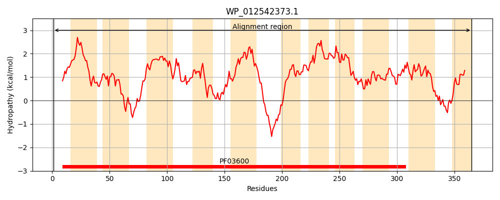
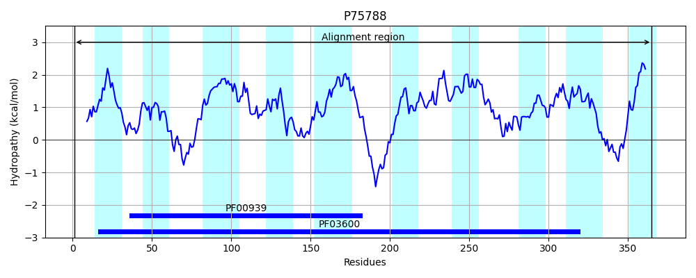
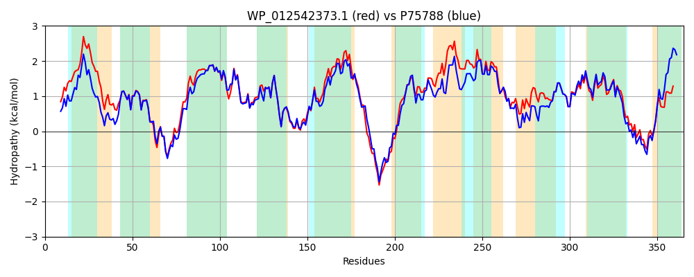

Hit Accession: P75788
Hit TCID: 2.A.45.2.5
Hit Description: gnl|BL_ORD_ID|11408 gnl|TC-DB|P75788|2.A.45.2.5 Inner membrane protein YbiR OS=Escherichia coli (strain K12) GN=ybiR PE=1 SV=1
Mach Len: 365
e:0.000000
Query TMS Count : 11
Hit TMS Count: 10
TMS-Overlap Score: 8.950000
Predicted Substrates:None
BLAST Alignment:
Score: 1499 , Bit scores: 582 bits, E-value: 0.0e+00, Alignment length: 365, Percentage identity: 78
Query: 1 MTLPFVQSLLRDRFLHLLLIIACVLSAIVPFVPASWPAAIDWHTIITLSGLMLLTKGIELSGYFDVLGRKMARRFVTERQLAIFMVLAAALLSTFLTNDVALFIVVPLTLTLKKWCAIPVNRLIIFEALAVNAGSLLTPIGNPQNILLWGRSGLSFVGFIGEMLPLAAAMMLTLLVLCWFCFPANRLSYQSSDKAPSWQPKLVWSCLGLYLVFLTALEMNQALWGLALVLLGFLILARAVIVHVDWSLLLVFMVMFIDVHLLTQLPALHHVLSGVGTLSGGGLWLTAIGLSQVISNVPSTILLLNYVPPSILLAWAVNVGGFGLLPGSLANIIALRMASDRRIWWRFHLYSIPMLLWAAISGYWL 365
M+LPF+++L DRF LL+++ LS VPF P SWPAAIDWHTIITLSGLMLLTKG+ELSGYFDVLGRKM RRF TER+LA+FMVLAAALLSTFLTNDVALFIVVPLT+TLK+ C IPVNRLIIFEALAVNAGSLLTPIGNPQNIL+WGRSGLSF GFI +M PLA AMMLTLL+LCW CFP + Y + + P W+P+LVWSCLGLY+VFLTALE Q LWGL +V GF +LAR V++ VDW+LLLVFM MFIDVHLLTQLPAL VL V LS GLWLTAIGLSQVISNVPSTILLLNYVPPS+LL WAVNVGGFGLLPGSLAN+IALRMA+DRRIWWRFHLYSIPMLLWAA+ GY L
Sbjct: 1 MSLPFLRTLQGDRFFQLLILVGIGLSFFVPFAPKSWPAAIDWHTIITLSGLMLLTKGVELSGYFDVLGRKMVRRFATERRLAMFMVLAAALLSTFLTNDVALFIVVPLTITLKRLCEIPVNRLIIFEALAVNAGSLLTPIGNPQNILIWGRSGLSFAGFIAQMAPLAGAMMLTLLLLCWCCFPGKAMQYHTGVQTPEWKPRLVWSCLGLYIVFLTALEFKQELWGLVIVAAGFALLARRVVLSVDWTLLLVFMAMFIDVHLLTQLPALQGVLGNVSHLSEPGLWLTAIGLSQVISNVPSTILLLNYVPPSLLLVWAVNVGGFGLLPGSLANLIALRMANDRRIWWRFHLYSIPMLLWAALVGYVL 365 | Protein Hydropathy Plots: |
|---|
|  |  |
Pairwise Alignment-Hydropathy Plot:
|
|---|
|  |